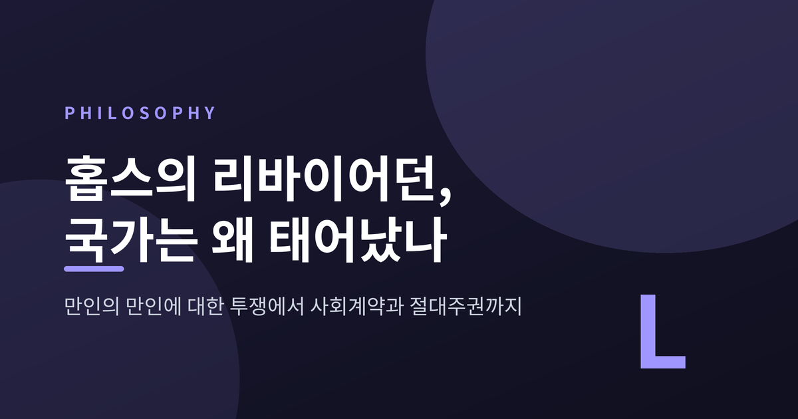
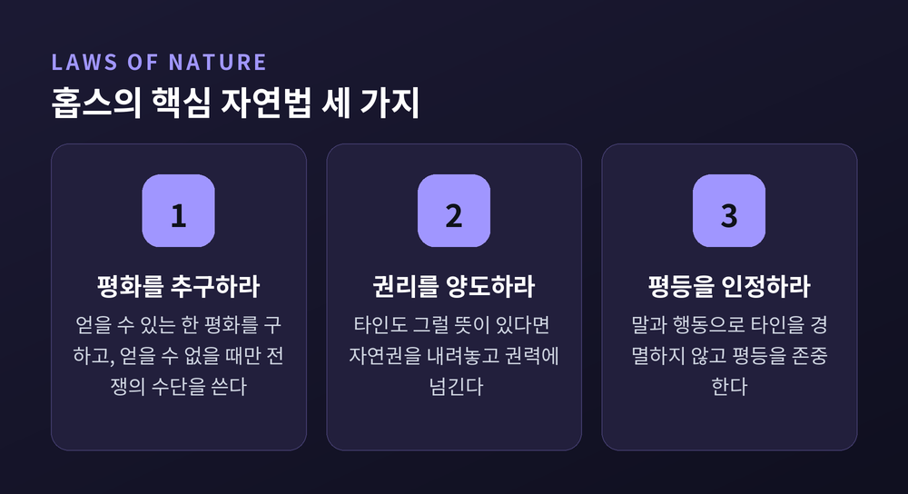
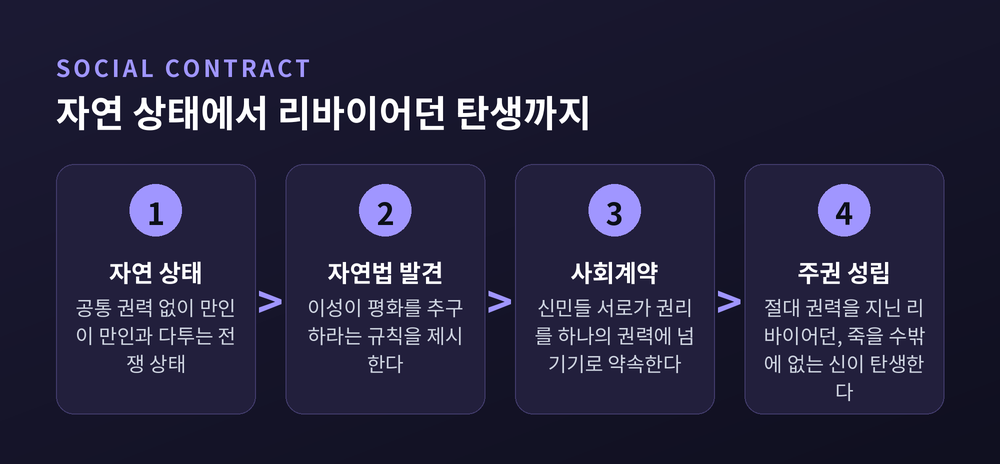
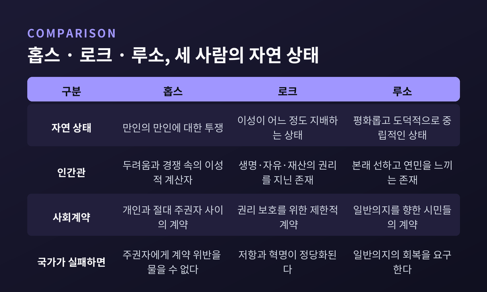

오늘은 토머스 홉스의 『리바이어던』을 두고 이야기해 보려 합니다. 왜 인간은 서로를 두려워하는 자연 상태를 벗어나 국가라는 낯선 존재에게 자신의 권리를 통째로 맡겼는가, 라는 질문입니다. 1651년에 나온 이 책 한 권이 오늘날 우리가 당연하게 여기는 '국가'라는 개념의 뿌리 중 하나라는 점에서, 찬찬히 짚어볼 값어치가 있습니다.
홉스는 1588년 잉글랜드 윌트셔에서 태어나 1679년까지 91년을 살았습니다. 그의 생애 한가운데에는 잉글랜드 내전(1642~1651)이 있었습니다. 왕당파와 의회파가 총칼을 맞대고, 통치란 무엇이며 권위는 어디서 오는가라는 질문이 나라 전체를 뒤흔든 시기였습니다.
『리바이어던』은 이 혼란이 채 가시지 않은 1651년, 홉스가 프랑스 파리 체류 후반기에 완성해 출간한 책입니다. 그는 이 격동을 멀리서 관찰한 사람이 아니라, 그 한복판을 통과한 사람이었습니다. 그래서인지 이 책에는 이상적인 인간상보다 실제로 인간이 무너지는 모습을 지켜본 사람의 시선이 짙게 배어 있습니다.
왕당파와 의회파처럼 서로 다른 권위가 맞설 때, 그 다툼을 조정할 더 높은 권위가 없다면 결국 전쟁으로 귀결된다 — 홉스는 이 경험을 통해 주권은 나뉘어서는 안 된다는 결론에 이르렀습니다. 『리바이어던』은 그 결론을 이론으로 정교하게 세운 책입니다.
홉스가 상상한 출발점은 국가도 법도 없는 자연 상태입니다. 그는 이 상태를 라틴어로 "bellum omnium contra omnes", 즉 만인의 만인에 대한 투쟁이라 불렀습니다. 이 표현은 『시민론』(1642)과 『리바이어던』(1651) 두 책 모두에 등장합니다.
『리바이어던』 13장에는 이 상태를 압축한 유명한 문장이 나옵니다. "인간의 삶은 고독하고, 가난하고, 험하고, 잔인하며, 짧다." 왜 이렇게까지 비관적일까요. 홉스의 설명은 의외로 단순합니다. 자연 상태에는 다툼을 강제로 멈출 수 있는 공통 권력이 없습니다. 그러니 사람들은 서로를 두려워하고, 부족한 자원과 명예를 놓고 끝없이 경쟁하며, 먼저 공격하는 쪽이 살아남을 확률이 높다는 계산을 하게 됩니다.
여기서 중요한 것은, 홉스가 인간을 원래 사악한 존재로 그리지 않았다는 점입니다. 오히려 그는 인간이 이성적으로 계산할 줄 아는 존재이기 때문에 이런 결론에 이른다고 봤습니다. 두려움과 경쟁, 그리고 이성이 함께 만들어낸 것이 바로 전쟁 상태라는 이야기입니다.
다행히 홉스는 여기서 이야기를 끝내지 않습니다. 그는 인간이 이성을 통해 스스로 발견할 수 있는 규칙, 곧 자연법이 있다고 말합니다. 법전에 적혀 있어야 효력을 갖는 시민법과 달리, 자연법은 누구나 이성만으로 유추해낼 수 있다는 점에서 자연스럽습니다.

『리바이어던』 14장의 제1자연법은 이렇습니다. 모든 사람은 평화를 얻을 수 있다는 희망이 있는 한 그것을 추구해야 하며, 얻을 수 없을 때 비로소 전쟁의 수단을 써도 된다는 것입니다. 제2자연법은 한 발 더 나갑니다. 다른 사람들도 기꺼이 그렇게 한다면, 자연 상태에서 모든 것에 대해 가졌던 권리를 내려놓고 그것을 하나의 권력에 넘겨야 한다는 것입니다.
15장은 여기에 여러 조항을 덧붙입니다. 말이나 행동으로 남을 경멸하지 말 것, 모든 인간이 평등하다는 사실을 인정할 것 같은 규칙들입니다. 홉스는 이 자연법들을 "평화의 조항들"이라고 불렀습니다. 이성이 인간에게 제시하는, 함께 살아가기 위한 최소한의 약속인 셈입니다.
자연법이 방향을 알려준다면, 사회계약은 그 방향을 실제로 실행하는 절차입니다. 사람들은 보호와 평화를 얻는 대가로 자신의 개별적 권리를 하나의 주권자에게 양도하기로 합니다.
여기서 홉스 이론의 독특한 지점이 드러납니다. 계약은 주권자와 신민 사이에 맺어지는 것이 아닙니다. 계약은 신민들 서로 사이에 맺어지고, 그 다음 신민들이 자신들의 권위를 한 사람 혹은 하나의 회의체에 넘겨주는 방식입니다. 그렇기 때문에 신민들은 주권자가 계약을 어겼다고 주장할 수 없습니다. 애초에 주권자는 그 계약의 당사자가 아니었기 때문입니다.
이 구조는 얼핏 냉정해 보입니다만, 홉스에게는 나름의 논리가 있습니다. 계약 당사자인 주권자가 따로 존재한다면, 그 계약이 깨졌는지를 다시 판정할 더 높은 권위가 필요해집니다. 그리고 그 판정을 둘러싸고 또 다른 다툼이 생길 수 있습니다. 홉스는 이런 무한 회귀를 끊기 위해, 주권자를 계약 바깥에 세워둔 것입니다.

책 제목이기도 한 '리바이어던'은 구약성서 욥기 41장에 등장하는 거대한 바다 괴물의 이름에서 따온 것입니다. 욥기에서 신은 이 사나운 괴물을 다스릴 수 있는 것이 오직 자신뿐임을 보여주며 자신의 권능을 증명합니다.
홉스는 17장에서 이렇게 씁니다. "이것이 저 위대한 리바이어던의 탄생이다. 아니, 더 경건하게 말하자면, 불멸의 신 아래에서 우리의 평화와 방위를 관장하는 저 죽을 수밖에 없는 신의 탄생이다." 신민들이 권리를 양도하는 순간, 국가는 성서 속 괴물만큼이나 압도적인 힘을 갖게 된다는 것입니다.
책 표지 그림도 이 은유를 그대로 시각화합니다. 수많은 개인의 몸으로 이루어진 거대한 군주의 형상. 국가란 결국 개별 인간들이 결합해 만들어낸 하나의 '인공 인간'이라는 생각이 그 안에 담겨 있습니다. "죽을 수밖에 없는 신"이라는 표현은 국가의 힘이 절대적이되, 신처럼 영원하지는 않다는 홉스 나름의 절제이기도 합니다.

홉스의 그림이 유일한 답은 아니었습니다. 존 로크는 자연 상태를 전쟁으로 보지 않았습니다. 그는 인간이 생명·자유·재산에 대한 자연권을 이미 갖고 있으며, 자연 상태 역시 어느 정도 이성이 지배하는 상태라고 봤습니다. 국가가 이 권리를 지키지 못하면 저항이 정당화된다는 것이 로크의 결론입니다.
장자크 루소는 더 멀리 갔습니다. 그는 자연 상태를 오히려 평화롭고 도덕적으로 중립적인 상태로 그렸습니다. 인간은 본래 선하고 연민을 느끼는 존재인데, 사회와 제도가 인간을 이기적이고 경쟁적으로 바꿔놓았다는 것입니다. 그에게 국가는 시민들의 '일반의지'를 대표해야 하는 존재였습니다.
세 사람 모두 자유를 사회질서의 핵심으로 봤다는 점은 같습니다. 다만 그 자유가 자연 상태에서부터 이미 있었는지, 아니면 국가가 세워진 뒤에야 비로소 생겨나는지를 두고 갈라섰습니다. 홉스에게는 후자였습니다. 국가 없이는 자유도, 평화도, 심지어 '나의 것'이라는 소유의 개념조차 온전히 성립할 수 없었습니다.
정리하면 이렇습니다. 홉스는 인간을 유달리 사악하게 보지 않았습니다. 다만 공통의 권력이 없을 때 이성적인 인간들이 어디까지 갈 수 있는지를 냉정하게 계산했을 뿐입니다. 그 계산 끝에 그는 절대적인 주권자, 즉 리바이어던을 해법으로 제시했습니다. 물론 이 해법이 오늘날에도 그대로 받아들여지긴 어렵습니다. 견제받지 않는 절대권력이라는 발상은 이후 로크와 루소를 비롯한 수많은 사상가들의 비판을 받았고, 우리는 지금 견제와 균형을 더 중요하게 여기는 시대를 살고 있습니다.
그럼에도 이 책이 여전히 읽히는 이유는 분명합니다. "왜 우리는 국가에 복종하는가"라는 질문에 홉스만큼 집요하게 파고든 사람도 드뭅니다. 자연 상태로 돌아가고 싶냐고 누군가 묻는다면, 아마 대부분은 망설임 없이 고개를 젓지 않을까 싶습니다.